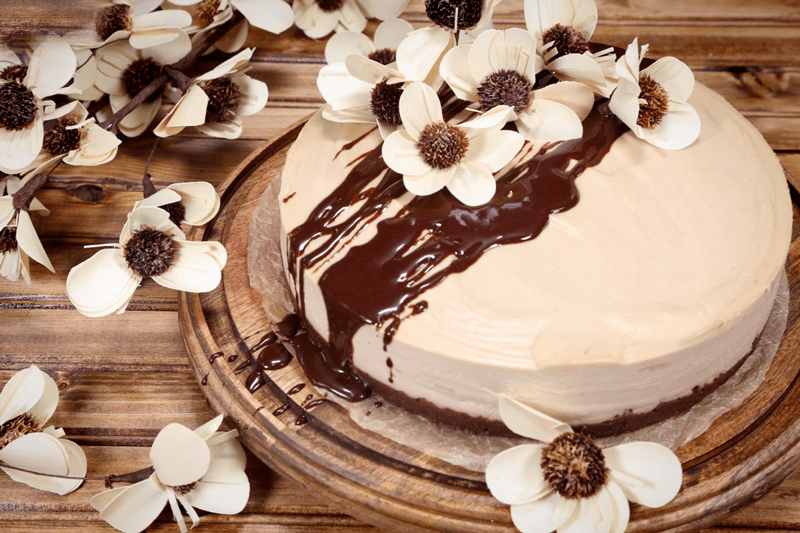
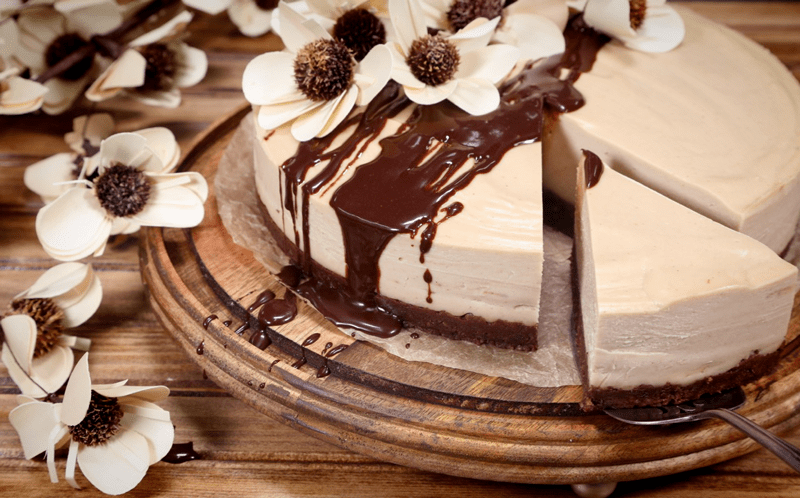
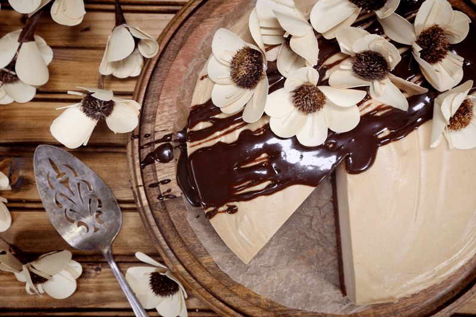
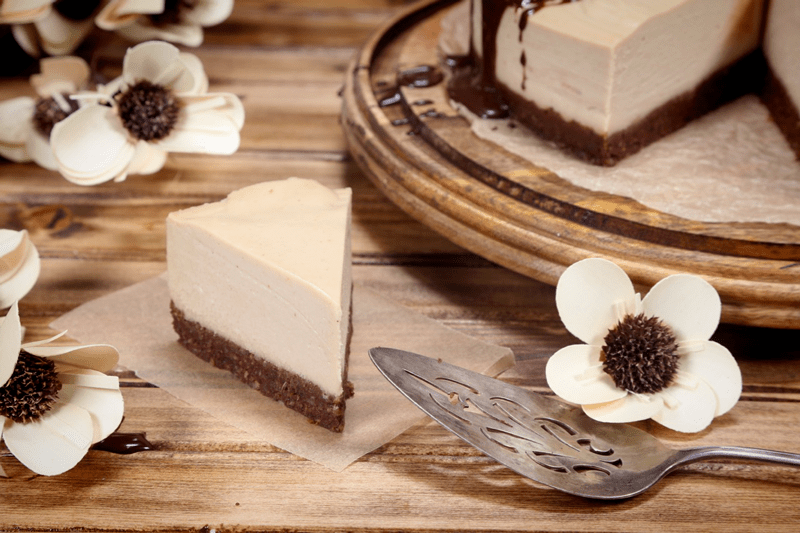
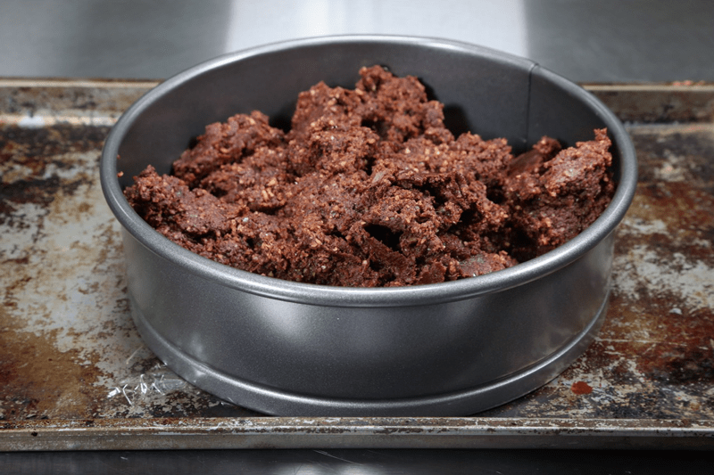
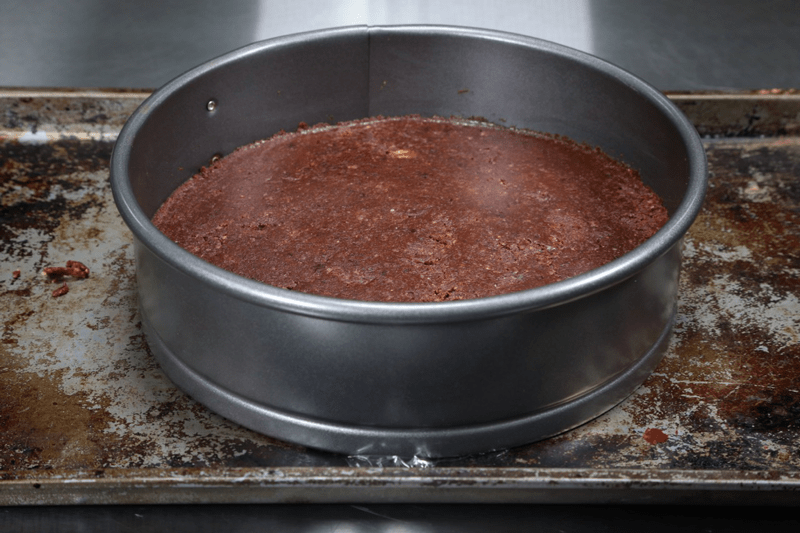
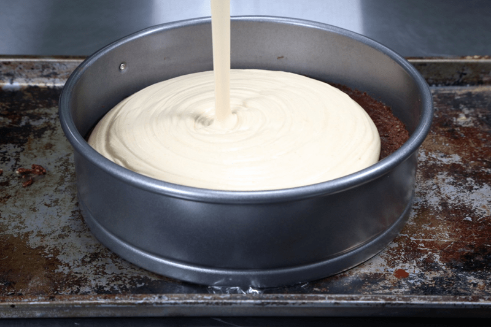
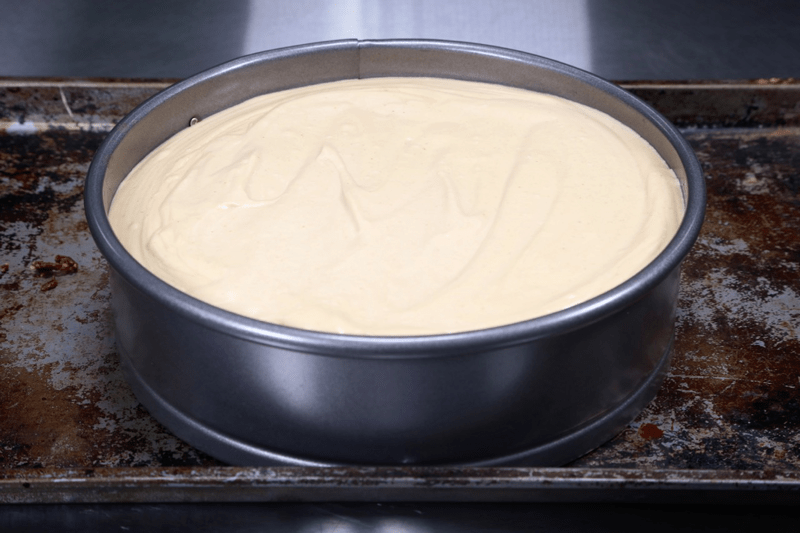
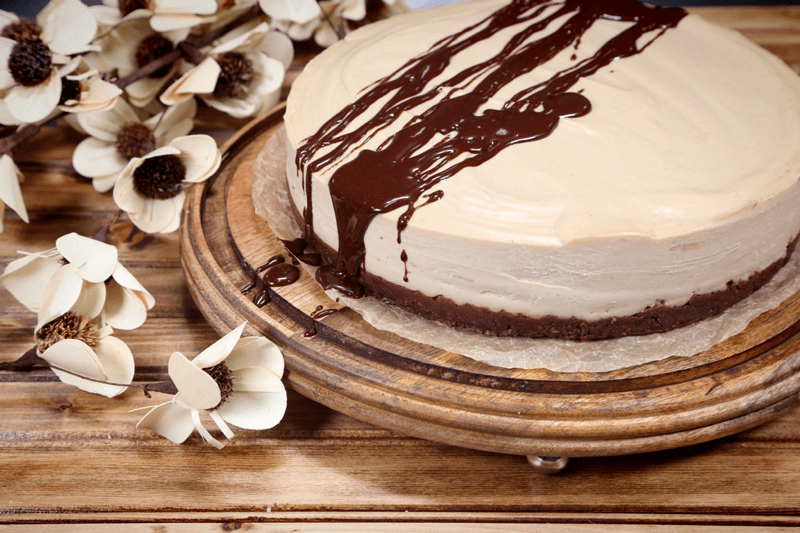
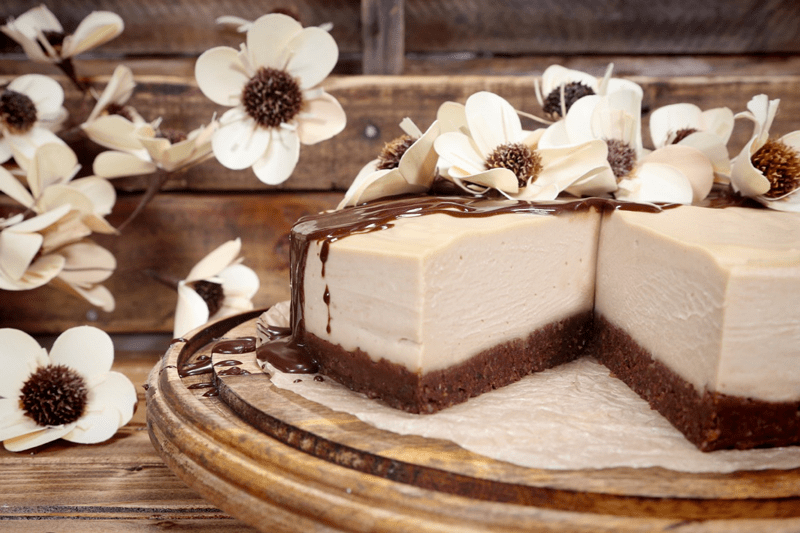

Chocolate Peanut Butter Buckeye Cake (includes lower glycemic version)
– raw, vegan, gluten-free, grain-free, lower glycemic option –
I created and shared this recipe back in 2011, and it has been a hit ever since. But I decided it was time to freshen things up by taking new photos, adding weight measurements (for all of you who keep asking for them). And to spruce up the “teaching” portion of this recipe. I don’t ever want to miss an opportunity to share with you, all that I have learned over the years

This creation is as if a cheesecake collided with a brownie. The top layer has a creamy and silky texture that compliments the thick ooey-gooey-chewy chocolate cake base.
Lower Glycemic Option
Over the years Bob and I have been drastically cutting down on sugars, even those from whole foods (dried & fresh fruits). I have quite radically reduced them from my diet for over a year now, but Bob still enjoys sweet treats now and then but, during those times, I take great effort in even reducing the sugars by using Markus Sweet or other non-sugar sweeteners. So, if this resonates with you, simply replace the maple syrup with the Markus Sweet in the peanut butter layer portion of the cake. And if you want/need to reduce sugars even further, you can skip the chocolate ganache altogether.

Peanut Butter
Are you allergic to peanut butter? No problem, you can replace the peanut butter with any other nut butter. It will change the flavor but what’s wrong with that? Not a darn toot’n thing! If you plan on using peanut butter, know that I used all-natural roasted peanut butter. Neither Bob nor I care for the taste of raw peanut butter (it is very different in taste). Again, make this recipe your own. Use whatever ingredients you feel comfortable with or have access to.

Why I add sunflower lecithin.
For Nouveauraw veterans, you have heard me over and over-explain why I add lecithin to certain recipes, and I am sorry to keep repeating this (overt your eyes if bored reading about it hehe) BUT I feel it’s important to talk bring up the topic for those are new to seeing it being used in recipes. Sunflower lecithin is made up of essential fatty acids and B vitamins. It helps to support healthy function of the brain, nervous system, and cell membranes. It also lubricates joints; helps break up cholesterol in the body. (
source)
It comes in two forms, powder and liquid. I prefer the powdered sunflower lecithin because it doesn’t taste near as strong as the liquid version, and it won’t affect the color of a recipe. Setting aside all the nutritional benefits, it is a natural emulsifier that binds the fats from nuts with water creating a creamy consistency.

Texture
Before I let you so you can create some dirty dishes, let’s briefly chat about the texture of this cake. The cake layer (bottom) has a rich brownie-like, chewy texture. If you wanted to stop right there and only make that you would have some nice brownies on hand… BUT why stop there? Let’s take it over the edge. The peanut butter layer is silky and creamy on the pallet. Here’s the trick to serving that PERFECT slice of cake. Before decorating, slip it into the freezer for roughly eight hours. Then pop it into the fridge overnight.
Come the next day, decorate it, and with a sharp, clean knife, make slow and steady cuts into the cake. Never pull the knife up and out. Pull it straight out, from the side of the cake. Wipe the knife clean in between each cut. This will give you the perfect slice of cake with a mouth-watering texture.
I hope you enjoy, please comment below. I love to hear from you all. blessings, amie sue
Ingredients:
Yields 9-inch cake plus 6 small cupcakes
Chocolate Ganache: Yield: 1 cup
- 3/4 cup (230 g) maple syrup
- 3/4 cup (55 g) raw cacao powder
- 1/3 cup (35 g) raw virgin coconut oil, melted
- 1/8 tsp (<1 g) sea salt
Chocolate cake:
- 3 cups (270 g) raw walnuts (soaked & dehydrated)
- 1/8 tsp (<1 g) sea salt
- 16 Medjool (317 g / 1.5 cups packed) dates, pitted
- 2/3 cup (52 g) raw cacao powder
- 1 tsp (3 g) vanilla extract
- 2 tsp (6 g) water
- 1/3 cup chocolate ganache (from above)
Peanut Butter Layer:
- 2 cups (445 g) almond milk
- 3 cups (400 g) cashews, soaked 2+ hours
- 3/4 cup (230 g) maple syrup or (1/2 cup (110 g) Markus Sweet (lower glycemic version))
- 1 cup (227 g) natural creamy peanut butter
- 1 Tbsp (15 g) fresh lemon juice
- 1 Tbsp (9 g) liquid vanilla
- 1/4 tsp (2 g) sea salt
- 3 Tbsp (22 g) ground sunflower lecithin
- 3/4 cup (135 g) coconut oil, melted
Preparation:
Ganache:
- Let’s start by making the ganache first as you will also be using part of it in the cake batter.
- In a high-speed blender combine the sweetener, cacao powder, coconut oil, and salt. Blend on high until smooth and glossy.
- Stop occasionally to scrape down the sides of the blender jar with a rubber spatula.
- Reserve 1/3 cup of ganache for the cake batter, and then place the remainder into a piping bag for decorating.
- I recommend placing a piece of tape over the piping tip, so it doesn’t start to seep out while you are waiting to use it.
- You could also use a squeeze bottle. It just depends on how you want to decorate the cake. And if that’s the case, when all is said and done, you could just skip all the piping and pour it on top of the cake.
Chocolate cake:
- Line the bottom of a 9-inch Springform pan with parchment paper. This will make it easier to remove when the cake is all done.
- Place the walnuts, cacao powder, and salt in a food processor fitted with the S-blade, process until finely ground.
- Be careful that you don’t over-process the walnuts and head towards making walnut butter.
- Over-processing can also lead to a very oily texture, which isn’t what we are aiming for here.
- Don’t be afraid to use the PULSE button if your machine has one. It’s really helpful in bouncing the walnuts around, getting good movement in them so they don’t get compact on the bottom of the bowl.
- Add the dates, cacao powder, ganache, water, and vanilla extract and process until the mixture sticks together.
- The ganache frosting recipe will make 1 cup of frosting, only use 1/3 of a cup in this cake recipe and save the rest for decorating. It should be plenty.
- If the dates are really dry and hard (like mine were), rehydrated them in enough warm water to soften. Be sure to remove as much water as possible.
- Press the cake mixture into the pan firmly and evenly. Set aside while you make the peanut butter layer.
- If the top of the cake layer is uneven, it will show when removing slices from the cake. This won’t affect the flavor by any means, it’s just nice to see even layers when plated.
Peanut butter layer:
- In a high-speed blender add the almond milk, cashews (drained and rinsed), sweetener, peanut butter, lemon juice, vanilla, and salt. Blend on high until creamy.
-
Due to the volume and the creamy texture that we are going after, it is important to use a high-powered blender. It could be too taxing on a lower-end model.
-
Blend until the filling is creamy smooth. You shouldn’t detect any grit. If you do, keep blending.
-
This process can take 2-4 minutes, depending on the strength of the blender. Keep your hand cupped around the base of the blender carafe to feel for warmth. If the batter is getting too warm. Stop the machine and let it cool. Then proceed once cooled.
-
If you wish to make this dessert with Markus Sweet to reduce the glycemic level, measure out 1/2 cup of the sugar substitute and grind it to a powder before adding.
-
With a vortex going in the blender, drizzle in the coconut oil, and then add the lecithin. Blend just long enough to incorporate everything together. Don’t over-process. The batter will start to thicken.
- What is a vortex? Look into the container from the top and slowly increase the speed from low to high, the batter will form a small vortex (or hole) in the center.
- High-powered machines have containers that are designed to create a controlled vortex, systematically folding ingredients back to the blades for smoother blends and faster processing… instead of just spinning ingredients around, hoping they find their way to the blades.
- If your machine isn’t powerful enough or built to do this, you may need to stop the unit often to scrape down the sides.
- Pour the batter over the cake layer in the Springform pan or other desired container(s).
- Gently tap the pan on the countertop to bring up any air bubbles.
- Place the cake in the freezer to set for 1-2 hours or until the middle of the cake is firm to the touch.
- Once this is achieved, you are now ready to decorate the cake. Be creative! You can pour the ganache frosting over the top or pipe it on.
- Once you have your cake decorated, store it in the fridge or freezer until ready to eat.

Lightly sprinkle the cake batter evenly around the base of the lined pan.

Smooth the batter out firmly and evenly. Be sure to clean up the edges before adding the second layer.

Pour the peanut butter layer into the pan.

Spread the batter evenly and slide into the freezer for it to firm up before decorating.

I decorated the top with the remaining chocolate ganache and some interesting paper flowers that I picked up at the grocery store of all places.

How to Fill a Pastry Bag:
- Place your preferred piping tip inside the bag (with the end snipped off so that the tip fits through the hole).
- Place the bag inside a tall cup or glass.
- Fold the excess that doesn’t fit inside the cup over the edges of the cup.
- Spoon the frosting into the bag, leaving a few inches of space so that the frosting doesn’t fill the entire bag.
- Remove the bag from the cup and squeeze out any air bubbles.
- Twist the top part of the bag and proceed with piping.
IF you don’t have a piping bag, you can use a Ziplock bag:
- Open a large Ziploc bag by pulling apart its seal.
- Place the bag inside a tall cup or glass.
- Fold the excess bag that doesn’t fit inside the cup over the edges of the cup.
- Scoop frosting into the bag, focusing on one corner.
- Grasp the top of the Ziploc bag where there is no icing with your hand to lightly close it and to force the icing towards the point of the corner.
- Cut open the point of the bag where the batter is. Depending on the amount of batter that you would like released from the bag, you can choose to cut a large or small hole.
- Grasp the top of the bag more firmly with your hand and push down on the frosting from the outside of the Ziploc.
- Aim the hole towards the cake and pipe away.
© AmieSue.com